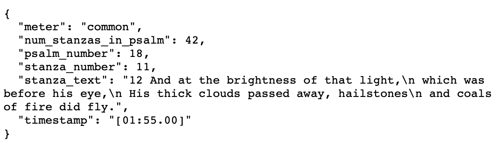
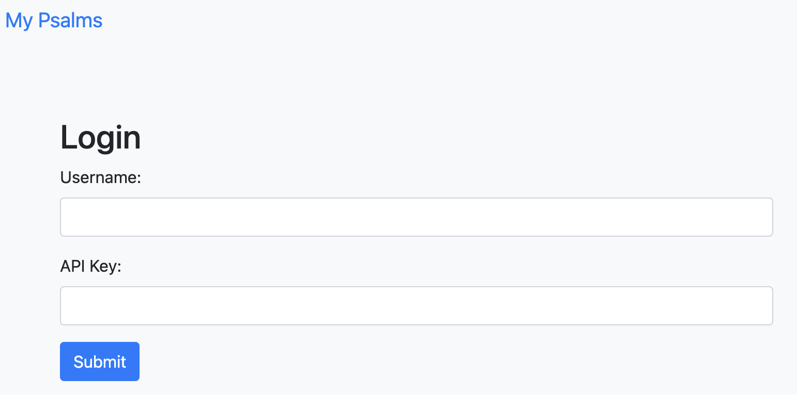
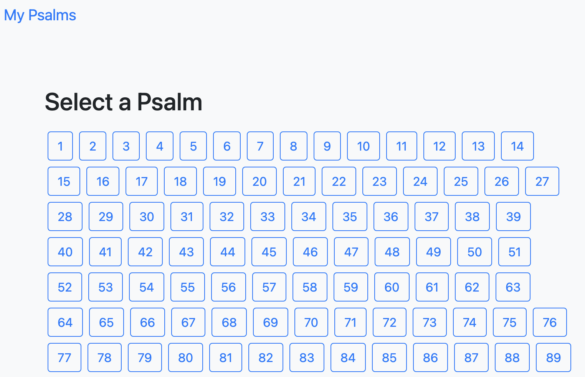
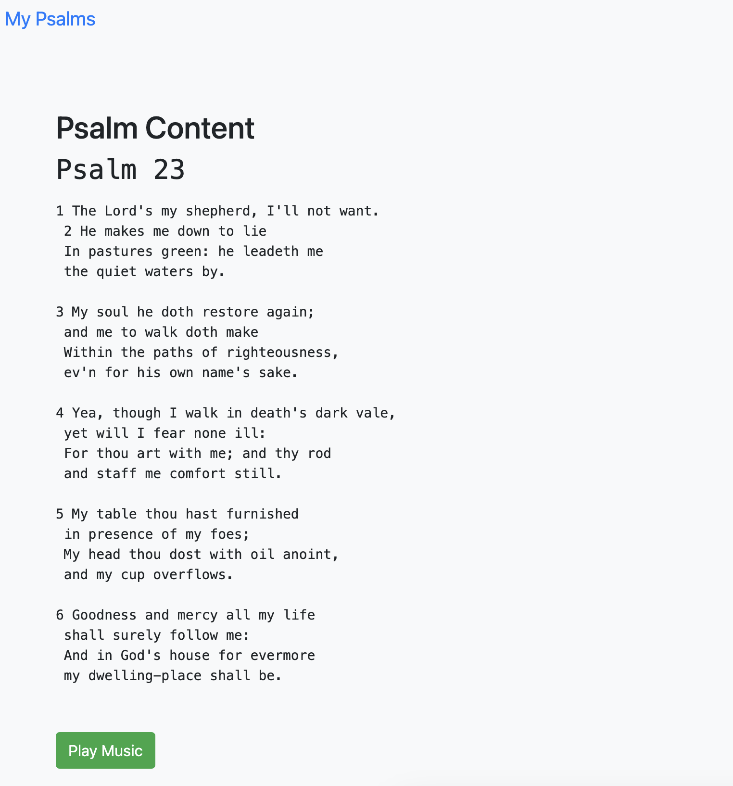

Building GRITS: Ghost Riders in the Sky (as interpreted through the 1650 Scottish Metrical Psalter was a total joy.
Strictly speaking, the inspiration was a school assignment: the theme -- Lost in Space.
A cynical person (with deep insight into my own mind) might suggest that I simply thought to myself, how could I possibly shoehorn in one of the domain names that I already own? And that is how the idea for this project's realization of MetricalPsalms.com came to be.
But the truth is, I loved the image of people marveling at the sky to the tune of the classic song.
And the story of the 1650 Scottish Metrical Psalter is a great one:
In 1650, they published a volume of psalms, faithfully translated into Early Modern English verse -- mostly in common meter, or what we often call ballad meter. To them, it represented an answer to the question: how can we find something to sing together on Sundays? They did not want to make up new songs, and they did not want to chant.
Committees were formed, and submissions were made, and edited, and made again.
The goal was to create not a paraphrase, but instead a strict translation that happened to fall into common meter and, often, rhyme.
There are a lot of amazing songs that fit the meter presented in this book that is almost 375 years old. This project is just the start of something really great.
The API of this project is a really nice part of it: it allows you to retrieve the stanzas of a psalm, a link to an appropriately-timed music file to fit it, and the appropriate timestamps with which to display and/or sing along to it.
Initially, my thought had been that I could construct a website with an API where people could easily retrieve the 150 metrical psalms approved in 1650, along with a tune to sing along with it. I had picked “Ghost Riders in the Sky” because of its connection to the theme — after all, wouldn't a person in 1650 looking up at aliens in the sky be likely to attribute it to ghosts, riding across the sky? I sure felt pretty clever coming up with that connection.
In order to get the texts, I set about first to find a digital copy. That was surprisingly hard work to find! I was able to find another website from about twenty years ago that had faithfully transcribed and uploaded the texts, but it did so on a psalm-by-psalm basis. Each one was contained within its own HTML file, and upon close inspection the HTML files were not consistently formatted across all 150.
First, I set about with the intent of getting my hands on those 150 separate HTML files, knowing that I’d be able to parse them later.
I decided to use Python for this task, knowing that I would be using Python to parse the data once I actually had it. I figured that sticking with Python would both help me avoid the mental stress of context-switching, and also give me access to some nice libraries for web-scraping.
I turned out to not need very much in this regard — to complete my fairly simple web scrape, I only ended up using the requests and os modules.
The code looked like this:
##################################################################################
import requests
import os
def save_psalm_html(psalm_number, html_content):
# Create a directory if it doesn't exist
os.makedirs('psalms_html', exist_ok=True)
file_path = f'psalms_html/psalm-{str(psalm_number).zfill(2)}.html'
# Save the HTML content to a file
with open(file_path, 'w', encoding='utf-8') as file:
file.write(html_content)
def scrape_psalm(url):
response = requests.get(url)
return response.text
# Scrape and save HTML for Psalms 1-150
for i in range(1, 151):
url = f'http://www.example.com/where/psalms_are/psalm-{str(i).zfill(2)}.htm'
html_content = scrape_psalm(url)
save_psalm_html(i, html_content)
print(f'Psalm {i} saved.')
##################################################################################
It worked very well! I was able to pull all 150 HTML files in to my local machine without running afoul of any rate limitations or anything like that. I knew that once I had the files locally, I could simply make a copy of them, and work on parsing them from that local copy. This way, I wouldn’t run into any issues where my parsing wasn’t totally what I expected, and I’d thus have to pull the files from the web again. More than anything, I wanted to avoid putting undue stress on the original server or creating a disruptive amount of traffic to that site.
With the files in hand, I set about to parse them.
As I mentioned, this was made far less easy by the fact that the files were inconsistently formatted. Many of them put each stanza into a pre tag, but not all did. Some files had multiple versions of psalms — with different meters — and this further complicated things. Sometimes common meter (what I was interested in) was first, and sometimes it was second. Sometimes the entire psalm was contained within a single pre tag — and sometimes more than one psalm in a single page was in a single set of such tags!
In order to make sense of this, and turn these HTML documents into something that would be useful and easy to put within a database, I looked at various data parsing options — and even made a good go at doing it all with regular expressions — before settling on an approach that would use the Beautiful Soup library from Python to accomplish the parsing. Once parsed, I would put the records into Pandas DataFrame objects before putting them into a MySQL server.
I played around with the parsing task on a local container that I had set up with Python 3.10 for this purpose. Once I was convinced of this approach, though, I set out to make a docker-compose setup that would take my data from unparsed HTML files to a functional API (and with all the wonderful steps that happen in between.)
My docker-compose set up was to create:
Data was to be persisted on two volumes: one for the MySQL server and one for the Redis server.
The data pre-processor first attempted to establish a connection to the MySQL. It did this using the mysql-connector Python library to continually try to connect to the MySQL database until a connection was able to be made. This re-trying was accomplished with Python’s ‘time’ module. Once connected, the script proceeded to parse the HTML records and put them into the database along with our test user record. With the tables created and the data prepared, we then turned to SQLAlchemy in order to create a SQLAlchemy engine to connect pandas to the database for the actual upload.
The server for the API itself is a Flask server with various endpoints set up to provide the user with multiple psalms, an entire psalm, or individual stanzas.
The stanza records have a field to hold a (text-based) timestamp, allowing for easy playback later along with our ultimate JS player components. This was done because Rabbit-Lyrics, our intended music player plugin, functions based on such text-based timestamps to show at what times the lyric highlighting should proceed to the next block.
The API server uses Redis for caching the results of queries. Authentication is done using API keys and an authentication function wraps the response functions of the server. SQLAlchemy handles our database transactions (queries.)
all requests require an API key sent either:
Test api_key is: t3stk3y1337 (if using frontend, use with username llcooldoug)
Pagination can be accomplished using the following url parameters:
localhost:5000/api/psalms, Methods: GET returns a list of psalms, in the JSON format: {"number": _____, "title": ______, "subtitle": _____, "meter": ______, "stanzas": ___, "audio": _____, "text": ____ }
GET A SINGLE PSALMlocalhost:5000/api/psalms/int:psalm_number, Methods: GET returns a single psalm, in the JSON format: {"number": _____, "title": ______, "subtitle": _____, "meter": ______, "stanzas": ___, "audio": _____, "text": ____ }
GET A SINGLE STANZAlocalhost:5000/api/psalms/int:psalm_number/stanza/int:stanza_number, Methods: GET returns a single stanza, in the JSON format: {“psalm_number": ___, "stanza_number": ___, "num_stanzas_in_psalm": ___, "meter": ______, "timestamp": ____, "stanza_text": _____ }
GET ALL STANZASlocalhost:5000/api/psalms/int:psalm_number/stanzas, Methods: GET returns all stanzas of a given psalm, in a list where they are each in the JSON format: {“psalm_number": ___, "stanza_number": ___, "num_stanzas_in_psalm": ___, "meter": ______, "timestamp": ____, "stanza_text": _____ }
USER VALIDATIONlocalhost:5000/api/validate-user, Methods: POST returns a JSON object with values based on the ‘username’ and ‘api_key’ from the JSON body of the request.
For example, accessing the following url: http://localhost:5000/api/psalms/18/stanza/11?api_key=t3stk3y1337 should give this response:
 The FrontendLog in to the frontend by spinning up the containers locally with: docker-compose up --build
fire up your local browser to http:://localhost:80
Now, you can log in to the frontend using our test credentials:
username: llcooldoug api_key: t3stk3y1337
Then, you can access all the psalms with the press of a button.
And once clicked, see the details of a given psalm:
In the next iteration, we'll see the 'play music' button actually work correctly. It was surprisingly difficult to get Rabbit-lyrics to work and I was not able to get it integrated and running before the project hit its deadline. Once graded, I'll feel free to go back and make the integration happen and actually work!